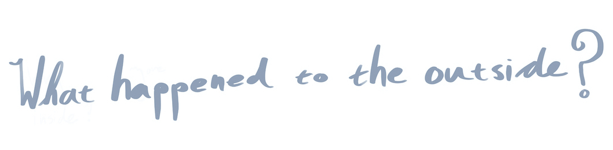
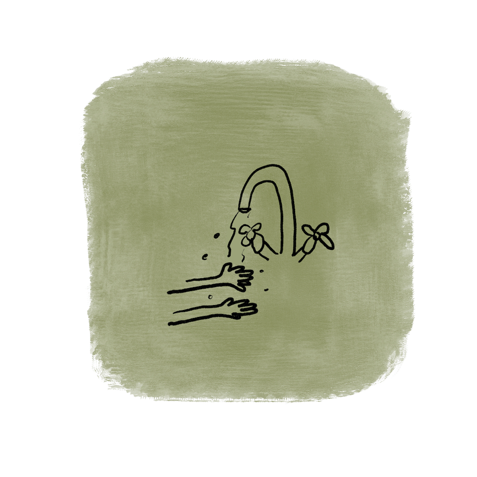
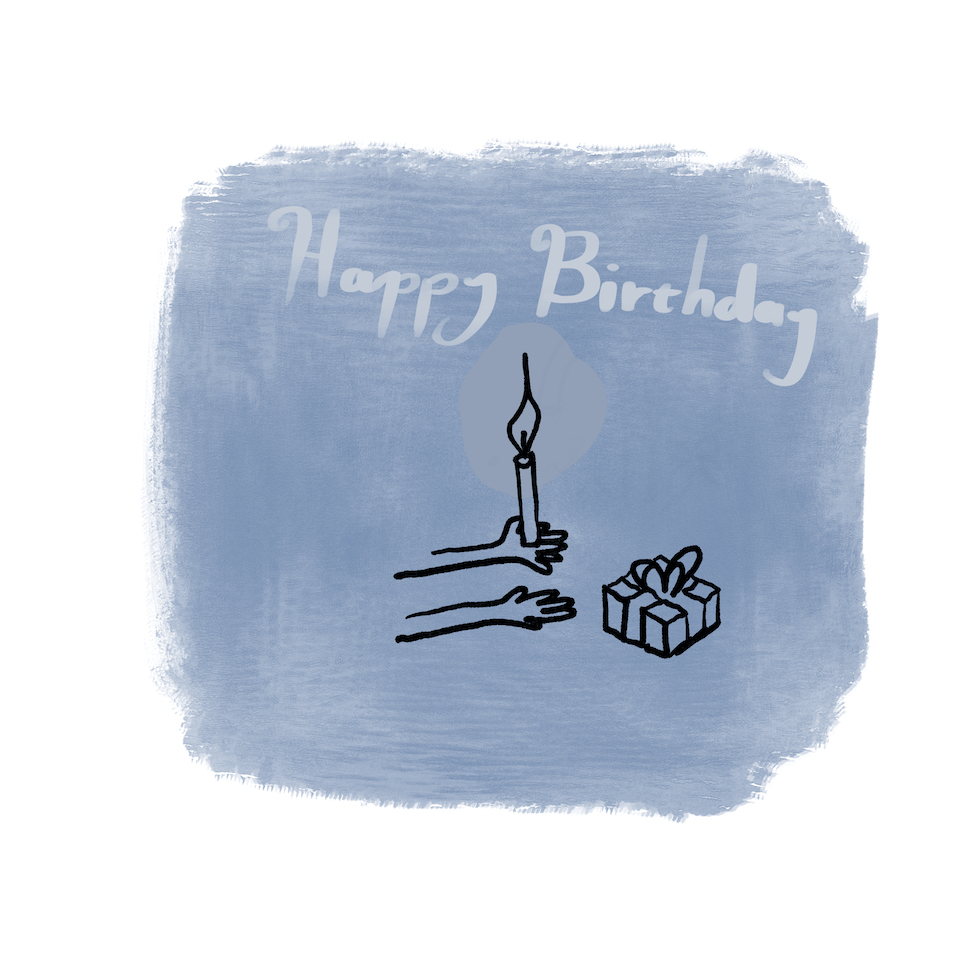

इस पुस्तक का कोई कॉपीराइट (प्रतिलिप्याधिकार) नहीं है। कृपया इसे साझा करने के लिए स्वतंत्र महसूस करें।
घर पर रहने के बारे में एक किताब।
अगर आप खिङकी से बाहर देखो तो शायद पूछो, “हम सब लोग घर के अंदर क्यों हैं ?
क्या हुआ है बाहर दुनिया को ?  क्या वो अभी वहीं है। ? क्या कोई इसको कहीं ले गया है। ? सब लोग खेलने कहॉ गए है ?
वैसे तो, आज हर कोई घर पर खेल रहा है।
वे अलग-अलग खेल खेल रहे हैं जैसे किलों का निर्माण कर रहे हैं, या समुद्री डाकू का खेल रहे हैं या चित्र बना रहे हैं
या तरह-तरह के कपड़े पहन रहे हैं।
और आप पूछ सकते हैं, "लेकिन क्यों?"
हर कोई अंदर है, क्योंकि हम में से कुछ लोगों की तबीयत ठीक नहीं है।
और यदि आप की तबीयत ठीक नहीं है, तो कभी-कभी आप जो सबसे अच्छा काम कर सकते हैं, कि अन्य लोगों के आसपास नहीं रहें, क्योंकि शायद आप उनकी तबीयत भी खराब कर दें।
हम ऐसा इसलिए करते हैं क्योंकि हम एक-दूसरे की बहुत परवाह करते हैं, हमने फैसला किया है कि जबतक हममें से जो अच्छा महसूस नहीं कर रहे पूरी तरह स्वस्थ नही हो जाते, हम थोड़ा सा समय उनसे दूर रहेंगे, इस समय यह हम बताने का कि हम उनसे कितना प्यार करते हैं, सबसे अच्छा तरीका यही है।
हम खुद को और अपने परिवारों कीटाणुओं से सुरक्षित रखने के लिए और बताने के लिए कि हम परवाह करते हैं, हम हमारे हाथ भी धो सकते हैं।
आप पूछ सकते हैं कि हमें कब तक उन्हें धोना चाहिए?
जिस समय में हम दो बार जन्मदिन का गाना गा लेते हैं।
यदि आप चाहें, तो आप इसे अपने हाथ के जन्मदिन का दिखावा कर सकते हैं।
शायद आप सोच रहे हैं, क्या होगा अगर आप अच्छा महसूस नहीं करते हैं?
या अगर आपके माता-पिता अच्छा महसूस नहीं करते हैं?
जो भी अच्छा महसूस नहीं करेगा, उसे कुछ दवा, पढ़ने के लिए बहुत सारी किताबें, फूल और शायद कुछ जेली भी मिलेंगी।
आप कह सकते हैं,
"लेकिन मैं अंदर रहने से ऊब रहा हूँ!"
अंदर होना कभी-कभी उबाऊ हो सकता है। मुझे उबाऊ फोन कॉल या उबाऊ कंप्यूटर पर काम करना पड़ सकता है या बोरिंग तरीके से आसपास के कुछ बोरिंग पेपरों को फेरना पड़ता है, जबतक कि मुझे कुछ और बोरिंग काम करने के लिए नही मिल जाता।
लेकिन मेरे पास आपके लिए एक महत्वपूर्ण काम है। मैं चाहता हूँ कि आप ऊब का पीछा करो।
ऊब को दूर रखने के लिए आप तकियों के किले का निर्माण कर सकते हैं, या एक किताब पढ़ सकते हैं - ऊब इनसे घृणा करता है, या ऊब का चित्र बना सकते हैं - ऊब अपने चित्र से सबसे अधिक से घृणा करता है!
खासतौर पर अगर आप खरगोश के कान उसके सिर पर बना दें।
हम एक दूसरे के साथ बहुत अधिक समय बिताने वाले हैं और बहुत कम समय अपने दोस्तों के साथ। लेकिन अगर हम अपने दोस्तों को याद करते हैं, तो हम उन्हें कॉल कर सकते हैं और उन के साथ अजीब चेहरे बनाने का खेल खेल सकते हैं, और एक साथ ऊब का पीछा कर भगा सकते हैं।
लेकिन अभी के लिए, हम एक साथ हैं, और हम उन सभी चीजों को कर सकते हैं जो हम करना चाहते थे, जैसे कि हमारे कमरे को साफ करना।
या इसके बजाय एक अंतरिक्ष यान का निर्माण।
और यहां तक कि अगर चीजें थोड़ी गड़बड़ जाती हैं, तो हम यहां रहेंगे और हम ठीक रहेंगे। हम शायद वो सभी काम नहीं कर सकते हैं जो हम करना चाहते हैं लेकिन ऐसा इसलिए है क्योंकि हम सभी को स्वस्थ और सुरक्षित रखना चाहते हैं।
कभी-कभी चीजें डरावनी लग सकती हैं लेकिन मैं वादा करता हूं कि हम इस सब के लिए यहां आपके साथ रहेंगे।
हम हमेशा नहीं जानते कि क्या होने वाला है लेकिन मैं आपसे वादा करता हूं, आप ठीक रहोगे और हम चीजों का ध्यान रख रहे हैं।
और हम सभी जल्द ही फिर से एक साथ होंगे
Other books by Iain S. Thomas
I Wrote This For You
I Wrote This For You And Only You
I Wrote This For You: 2007-2017
I Wrote This For You: Just The Words 300 Things I Hope
How To Be Happy: Not A Self-Help Book Intentional Dissonance
I Am Incomplete Without You
Every Word You Cannot Say*
यदि आपने यह पुस्तक खरीदी है, तो आपका बहुत-बहुत धन्यवाद, लेकिन मुफ्त में इसे पाने के लिए आपका भी स्वागत है। हम असाधारण समय में रह रहे हैं और अपने बच्चों का मार्गदर्शन कर रहे हैं और उनसे बात कर रहे हैं कि क्या चल रहा है जो चुनौतीपूर्ण होगा और मुझे उम्मीद है कि यह पुस्तक मदद कर सकती है। यदि आप मेरे परिवार और मेरी मदद करना चाहते हैं, तो इसे साझा करने या मेरी कुछ अन्य पुस्तकों को खरीदने पर विचार करें। किसी भी तरह से, मैं आपको अपना सर्वश्रेष्ठ भेजता हूं और मुझे आशा है कि आप सुरक्षित रहेंगे।
- iain s. thomas